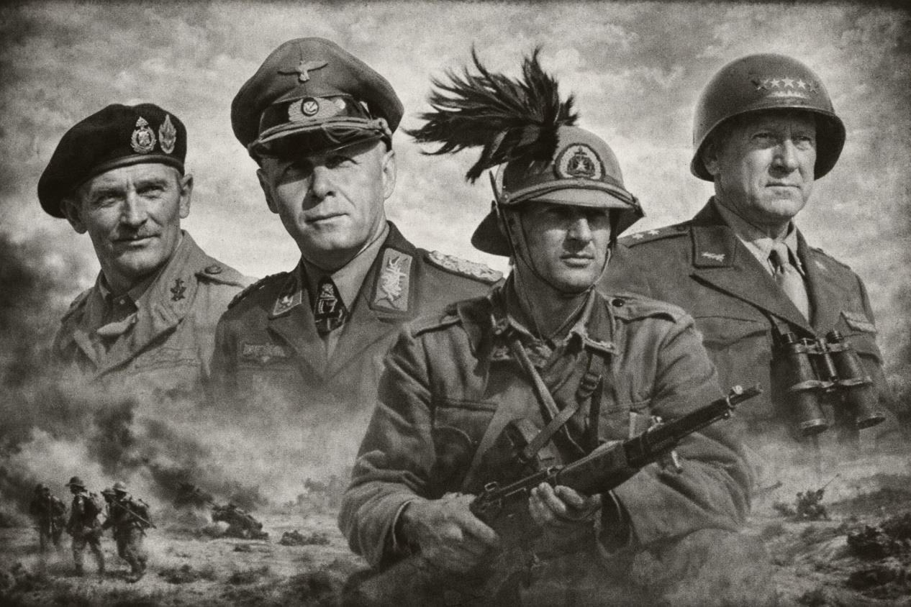

Operación 1
Tobruk — El perímetro resiste
La guarnición aliada defiende el perímetro fortificado de Tobruk frente a ataques italianos.
Terreno: fortificaciones, trincheras, alambradas y desierto abierto.
La campaña sigue el pulso de la guerra en el desierto desde Tobruk hasta Túnez.


La guarnición aliada defiende el perímetro fortificado de Tobruk frente a ataques italianos.
Terreno: fortificaciones, trincheras, alambradas y desierto abierto.
Rommel lanza su ofensiva envolvente contra el frente británico.
Terreno: desierto abierto, minas y posiciones artilleras.
Tras el desembarco aliado, la carrera hacia Túnez fuerza nuevos choques en el interior.
Terreno: pueblo u oasis, carretera y lomas bajas.
El Afrika Korps golpea a fuerzas estadounidenses en un paso duro y encajonado.
Terreno: collado montañoso, carretera y crestas rocosas.
Ofensiva final aliada para tomar Túnez y cerrar definitivamente la campaña africana.
Terreno: periferia urbana, vías de acceso y colinas exteriores.


Este código está preparado para que todas las imágenes vayan dentro de una carpeta img en el repositorio. La portada usa hero-principal.jpg y la galería reutiliza las diez imágenes extraídas del PDF de campaña.